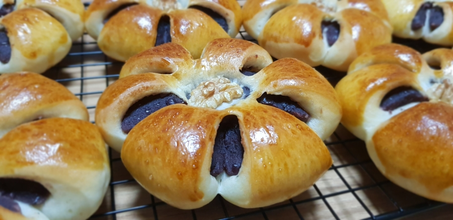

[Zutaten]
Weizenmehl (Typ 550) 200 g
Trockenhefe 4 g
Salz 3 g
Zucker 30 g
Butter 30 g
Ei (Größe S oder M) 1 Stück
Milch 70 g Rote Bohnenpaste (Anko) 320 g

Schauen Sie sich dieses tolle Video an, in dem gezeigt wird, wie man Rote Bohnenpaste (Anko, 팥앙금) aus der MBN-Sendung herstellt!
[Schritte]
In eine Schüssel lauwarme Milch und Ei geben, dann Weizenmehl, Zucker, Salz, Backpulver und Hefe abmessen und hinzufügen. Dabei das Ei verquirlen und etwas davon aufbewahren, bevor es in die Schüssel kommt.
Sobald sich der Teig im Teigkneter zu einer Kugel formt, Butter hinzufügen und weiterkneten.
Den Teig für die erste Gärung etwa 50 Minuten ruhen lassen.
Währenddessen die Rote Bohnenpaste (Anko) in 40 g große Kugeln formen und bereitstellen.
Nach der ersten Gärung den Teig durchkneten, um die Luft herauszulassen, und in 8 Stücke teilen. Den Teig mit Folie abdecken und etwa 10 Minuten für die Zwischenruhe ruhen lassen.
Nach der Zwischenruhe den Teig flach ausrollen, die Bohnenpaste darauf legen und den Teig zu einer runden Form schließen.
Den Teig flach drücken und mit einem Nudelholz in der Mitte kräftig drücken. Mit einer Schere sechs Schnitte in den Teig machen.
Den Teig mit Abstand auf ein Backblech legen und für die zweite Gärung etwa 45 Minuten ruhen lassen.
Nach der Gärung das zuvor aufbewahrte Ei mit etwas Wasser vermischen und den Teig damit bestreichen. Für die Dekoration können Sie Walnüsse, schwarze Sesamsamen oder andere Nüsse verwenden.
Im vorgeheizten Ofen bei 190 Grad etwa 10 Minuten backen.
Fertig sind die süßen Bohnenbrötchen (Danpatbbang)! Dort entstehen etwa 7-8 Brötchen.